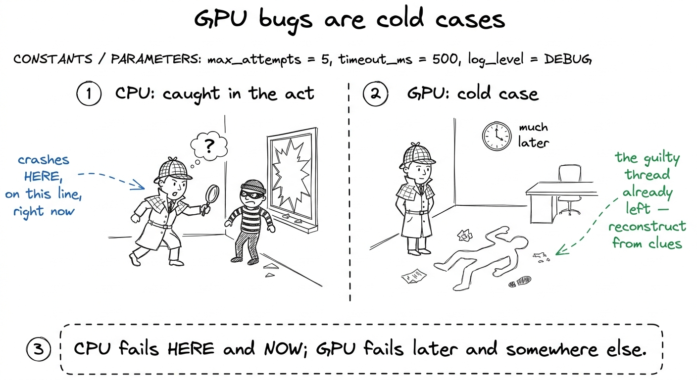
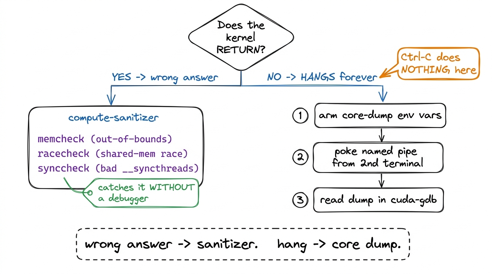
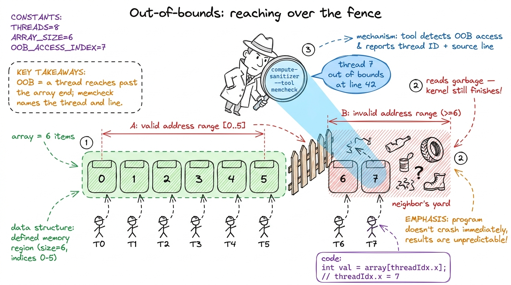
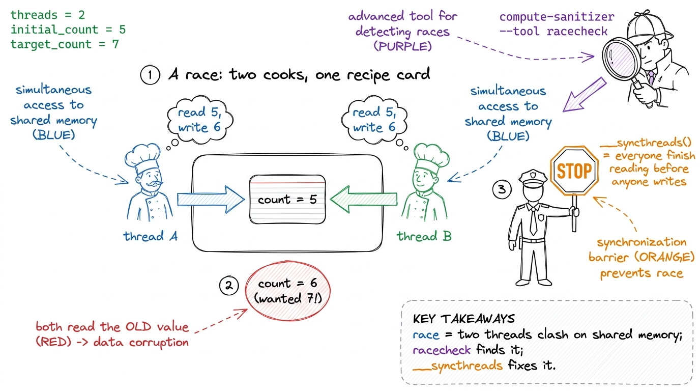
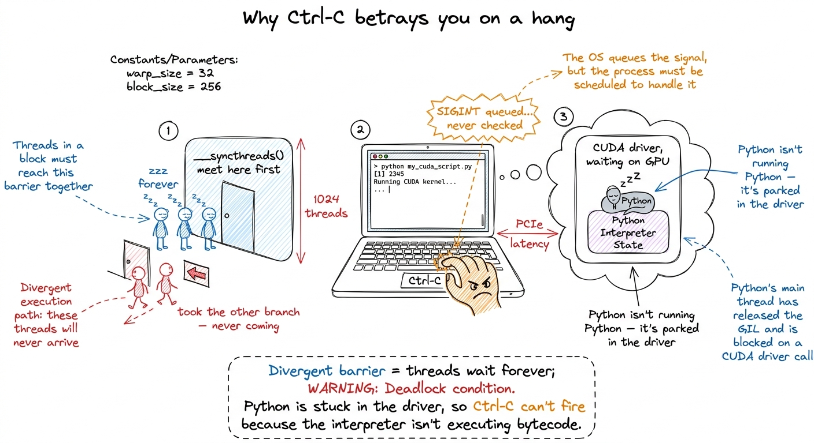
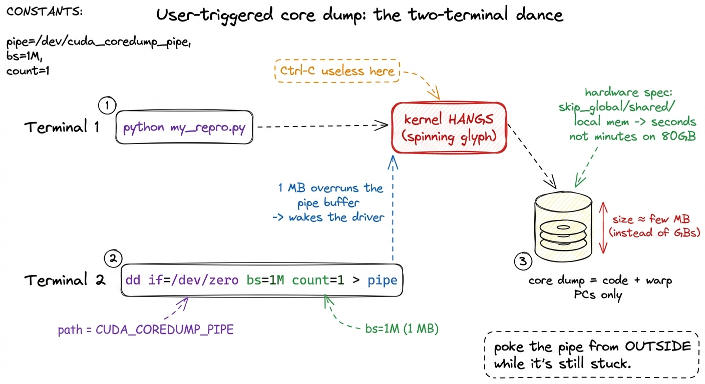

Teaching debugging: war stories that stick
By the end of this chapter you can stand at a whiteboard and teach GPU debugging as a set of detective stories — the race, the misaligned load, the silent NaN — and hand students the exact tools (compute-sanitizer, core dumps, cuda-gdb) that crack each case. You don't need to have shipped a kernel yourself to teach this well. You need three good crime stories and the discipline to say, every time: a GPU fails quietly, so we have to go looking.
This is the chapter where students stop being scared. Everyone who writes a kernel eventually hits a bug that makes no sense — the answer is wrong, or the program just freezes forever. Left alone, that experience makes people feel stupid. Taught well, it makes them feel like detectives. Your whole job here is to flip fear into curiosity.
The one thing that makes GPU bugs different
Start with the plain, unsettling truth. On a normal CPU program, when something breaks, it breaks right there. You get an error, a line number, a stack trace pointing at the exact line. GPU code does not do this. It fails silently, it fails later, and it fails somewhere else.
Why? Because launching a kernel is like mailing a letter. You write kernel<<<grid, block>>>(...), and that line returns immediately — the letter is in the mailbox, your Python keeps running. The GPU does the actual work later, on its own time. So if the work goes wrong, your Python is already twenty lines further down the page. The thread that made the mistake has finished and vanished. There's no one left at the scene to question.

figure rendering · The core mental model: a CPU crash is a live scene; a GPU bug is a colThe two kinds of case: dead body vs. missing person
Here is the single organizing idea for the entire chapter. Write it on the board and keep pointing back at it. There are exactly two ways a kernel goes wrong, and they need two completely different detectives.
Case one: the kernel finishes, but the answer is wrong. The letter got delivered, but the contents are garbage. Someone scribbled in memory that wasn't theirs, or two workers fought over the same scrap of paper. The program returns. You just can't trust what it gives you.
Case two: the kernel never finishes at all. The letter went into a black hole. The GPU is spinning forever and your terminal is frozen. Nothing comes back, ever.

figure rendering · The whole chapter on one slide: two failure modes, two toolkits. AlwayStory 1 — the misaligned load (an out-of-bounds crime)
Tell it as a story, not a definition. Your kernel launches a thousand threads. Each thread is told "go read the number at position my_id in this array." But the array only has 900 slots. Threads 900 through 999 go reach for numbers that were never theirs — they read past the end of the fence, into the neighbor's yard. That's an out-of-bounds access. The kernel usually still finishes; it just comes back holding garbage from someone else's memory.
The sibling crime is the misaligned load. GPUs like to grab memory in neat, aligned chunks — imagine mailboxes that only open in blocks of four. If a thread tries to read starting from mailbox 3, straddling two blocks, the hardware faults. Same family of bug: reaching for memory the wrong way.
The detective for this crime is compute-sanitizer. You don't change your code. You just run your normal command with compute-sanitizer in front of it, like putting a detective's magnifying glass over the whole thing:
compute-sanitizer --tool memcheck python my_repro.pyThe memcheck tool watches every memory access and, the instant a thread reaches out of bounds, it stops and tells you which thread and which source line. It's the CUDA cousin of Valgrind. Yes, it runs your program 10× slower or more — and that's completely fine, because you're not timing anything. You're asking one yes/no question: did anyone reach over the fence?

figure rendering · The out-of-bounds crime and its detective: threads reach past the fenccompute-sanitizer. It's the first thing a professional reaches for, every single time.Story 2 — the race (two workers, one sheet of paper)
This is the most important story in the chapter, because races are the bugs that make grown engineers cry. Tell it carefully.
Inside a block, threads can share a tiny fast scratchpad called shared memory. It's a whiteboard the whole team can write on. Now imagine two workers both need to update the same cell on that whiteboard. Worker A reads the value, adds one. Worker B reads the same old value, adds one. Both write back. You wanted the number to go up by two — it went up by one. Nobody made a "mistake." They just stepped on each other. That's a race condition.
The detective here is a different sanitizer tool:
compute-sanitizer --tool racecheck python my_repro.pyracecheck watches the shared-memory whiteboard specifically. It catches two threads writing the same spot without a __syncthreads() between them — the read-after-write hazard that produces those "usually right" results. There's a third cousin too, synccheck, which catches a subtler crime: a __syncthreads() that not every thread reaches, because it's hidden inside an if that only some threads take. We'll meet the consequences of that one in Story 3.

figure rendering · The race, dramatized: two cooks overwrite one card, the count comes ouStory 3 — the hang (and why Ctrl-C betrays you)
Now the hard one, and the crowd-pleaser. Sometimes a kernel doesn't finish at all. Your terminal just sits there. You hit Ctrl-C. Nothing. You hit it again. Nothing. This is where students panic — so this is where you get to be the hero.
Here's the crime. __syncthreads() is a rule: "nobody moves until everybody in the block reaches this line." Now suppose some threads take an if branch that contains a __syncthreads(), and the rest don't. The threads inside the branch wait at the barrier for their teammates. The teammates already walked past — they'll never arrive. So the waiting threads wait forever. The GPU spins. Your program hangs. This is a divergent barrier deadlock.
And now the famous betrayal: why doesn't Ctrl-C work? Because your Python isn't running Python anymore. It's frozen deep inside the GPU driver, waiting for the GPU to say "done." Ctrl-C sends a polite interrupt signal, but Python only checks for that signal between its own instructions — and it's stuck mid-instruction inside the driver, which is waiting on a GPU that will never answer. So your interrupt sits in a queue, unread, forever. The one move everyone tries first is the one move that cannot possibly work.

figure rendering · The hang and its cruel twist: threads deadlocked at a barrier, and a CCracking the hang: snapshot the frozen scene
So if you can't interrupt it, what do you do? You take a photograph of the frozen GPU from the outside — while it's still stuck. CUDA can do exactly this. It's called a user-triggered core dump: a snapshot of every warp's program counter — that is, exactly which instruction each group of threads is frozen on.
The workflow is a little two-terminal dance, and it's worth walking through slowly because every piece earns its keep.
Terminal 1 — before you launch, you set a handful of environment variables that arm the camera. The two switches that matter most:
export CUDA_ENABLE_USER_TRIGGERED_COREDUMP=1
export CUDA_COREDUMP_PIPE="/tmp/cuda_coredump_pipe_%h.%p.%t"
export CUDA_COREDUMP_GENERATION_FLAGS='skip_global_memory,skip_shared_memory,skip_local_memory'Then you run your repro normally, and it hangs, exactly as expected.
Terminal 2 — from a second terminal, you poke the running process through a named pipe (a little mailbox in the filesystem the driver is watching). Poking it triggers the snapshot:
dd if=/dev/zero bs=1M count=1 > /tmp/cuda_coredump_pipe_...dd, NOT echo. A bare echo writes a few bytes that get stuck in the pipe's buffer and never wake the driver — you wait, nothing dumps, and you wrongly conclude the whole mechanism is broken. dd pushes a full megabyte and forces the driver to notice. Second: that skip_global_memory flag. Without it, the dump tries to save all 80 GB of the H100's memory and takes forever. With it, you save just the code and the program counters — the only thing you need to find a hang — and the dump takes seconds instead of minutes.
figure rendering · The rescue move drawn out: Terminal 1 hangs, Terminal 2 pokes the pipeReading the evidence: cuda-gdb
Now you've got a photograph of the crime scene. You open it in cuda-gdb, the GPU debugger, which understands these dump files:
cuda-gdb
(cuda-gdb) target cudacore /tmp/cuda_coredump_...It drops you right at the frozen kernel and shows you, warp by warp, which instruction each group of threads was stuck on. For a divergent-barrier hang, this is the smoking gun: you literally see two groups of threads parked at two different program counters — one group waiting at the barrier, the other long gone. The case solves itself the moment you can see it.
NVCC_PREPEND_FLAGS='-lineinfo', which stamps a source-line map into the binary so cuda-gdb can turn a raw address back into "line 214 of mma.cuh." One trap the vLLM team flags: if ccache (a compiler cache) is on, it hands back the old binary with no line map and the flag silently does nothing — so set CCACHE_DISABLE=1 for the debug rebuild. When even that isn't enough, nvdisasm -gi reconstructs the full chain of inlined calls that led to the crash.1 The silent NaN — a number that's become "not a number," often from a 0/0 or an overflow in mixed precision — is its own detective story. It doesn't crash or hang; it just poisons every later computation, because any math touching a NaN produces another NaN. The trick is to hunt for where it first appears: check tensors layer by layer until one comes back clean-in, NaN-out. That's your crime scene.
Teaching notes: how to run the block
Here is a concrete plan for a single session.
- Open with the cold-case framing (5 min). Ask "who's had code that's wrong but doesn't crash?" Land the mailed-letter metaphor. Draw the two-crimes decision tree and leave it up all session.
- Story 1, out-of-bounds (8 min). The 8-mailbox by-hand demo. Then live-run
compute-sanitizer --tool memcheckon a script with a deliberate off-by-one and let it name the line. That live moment — the tool pointing straight at the bug — is your first "whoa." - Story 2, the race (10 min). The two-cooks-one-card drama. Hammer the "different output every run = suspect a race" reflex. Run
racecheck. - Story 3, the hang (15 min). Build the divergent-barrier meeting metaphor, then deliver the Ctrl-C betrayal as the emotional peak. Do the two-terminal core-dump dance live if you possibly can — the
dd-through-a-pipe moment feels like magic. - Close (2 min). Return to the decision tree. "Wrong answer? Sanitizer. Hang? Snapshot from outside. That's the whole map."
dd a megabyte into the pipe, and watch the dump appear. Going from "hopeless frozen screen" to "here's exactly where all 32 threads are stuck" in thirty seconds is the most memorable thing you'll show all day.You can now teach
- Why GPU bugs are cold cases — the mailed-letter model of async launch, and why failures show up silently, later, and elsewhere.
- The two-crimes decision tree — kernel returns wrong answer vs. kernel hangs — and which detective each one needs.
- The out-of-bounds / misaligned-load story with the mailbox demo, cracked by
compute-sanitizer --tool memcheck. - The race condition as two cooks fighting over one card, the "different-every-run" tell, and
racecheckplus__syncthreads()as the fix. - The hang as a divergent-barrier deadlock, the jaw-drop of why Ctrl-C structurally cannot work, and the two-terminal user-triggered core dump that snapshots the frozen GPU.
- Reading the evidence in cuda-gdb, plus the production reality (
-lineinfo, theccachetrap,nvdisasm -gi) that vLLM engineers live by.